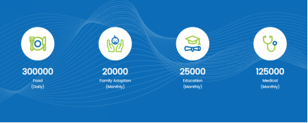

Welcome to the
Saylani Welfare
The largest NGO offering free a|
Saylani Welfare is on the ground and already working with local communities to assess how best to
support underprivileged families in more than 63 areas of day to day lives.
GENERAL
Rs.
What We Are Doing
Welfare
Medical
Online Sadqah
RO Plant
Education
Food
Daily Food
Zakat
IT Entrepreneurship Courses
Other Projects
Hepatitis
Saylani Welfare has also set up
a clinic for the best treatment of hepatitis patients where hepatitis patients are being treated
Housing Society
Saylani Welfare is also providing its own home facility for the homeless people. So far,
thousands of houses and flats have been constructed and given in easy installments
IT Literacy
We are committed to developing more than 1 million software developers, which will add about 100 billion annually to Pakistan's economy and help ease the debt burden on Pakistan
Tharparkar
In Tharparkar, Saylani has set up several schools and ro plants, dug wells and brought the children there to Karachi and taught them modern technology

Our Testimonials
What They Say?
Arshad Wali Muhammad
(Group Director, Gerry’s Group)
Saylani Welfare Trust is a name that needs no introduction today. The journey this team embarked upon was made possible owing to their zeal, enthusiasm & commitment to the society and by the grace of Allah (SWT), it has become a name that we need and not just the one we want. I wish Saylani’s team all the success and blessing that they deserve for future, May God bless Saylani and ensure prosperity and happiness for our people, Ameen!